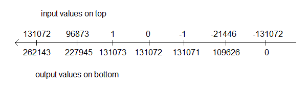

Homework #4 - Not completed yet
Guidelines
- Complete your work on green engineering paper
- Staple in upper left if more than one sheet.
- Format the top of the first sheet as follows.
| ECE 383 | [Your name] | HW#1 | [Due Date] | [Page ref]
|
The page reference for the first page of a four page document would be 1/4, the
second page of this document would be labeled 2/4 and so on.
- Do not write on the back side of the green engineering paper
Create a digital circuit that converts 18-bit 2's complement numbers
into 18-bit unsigned values using a special scaling. The idea of the
rescaling is to preserve the order of the 2's complement values while
shifting them to positive values. The following diagram shows the input
values on the top of the number line and the output values from your circuit
below the number line.
- The largest 18-bit 2's complement value is 2^17-1 = 131071. This number gets
scaled to the largest 18-bit unsigned value 2^18-1 = 262143.
- The "middle-most" 18-bit 2's complement value 0 gets shifted to the
"middle-most" 18-bit unsigned value 2^17 = 131072.
- The smallest 18-bit 2's complement value is -2^17 = -131072. This number gets
scaled to the smallest 18-bit unsigned value 0.

You will have to figure out the design of the circuit, but I would recomend that
you try to solve the problem using an if/then approach. The solution is very
simple, but the journey is fraught with pitfalls.